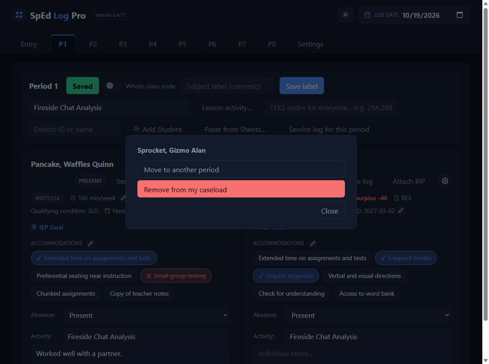
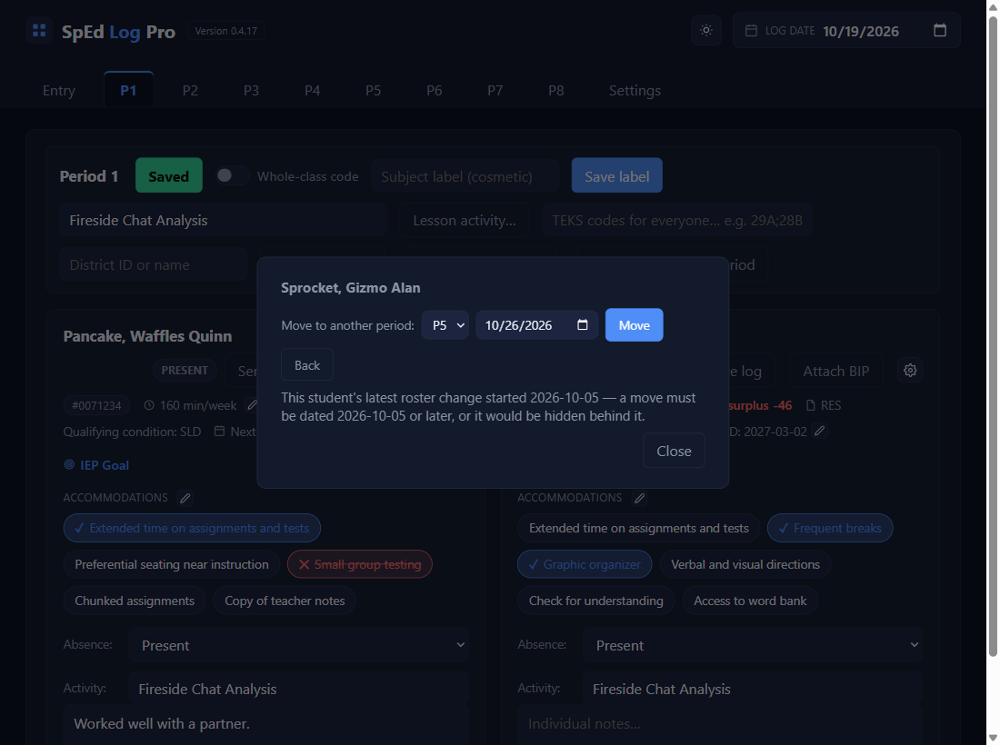
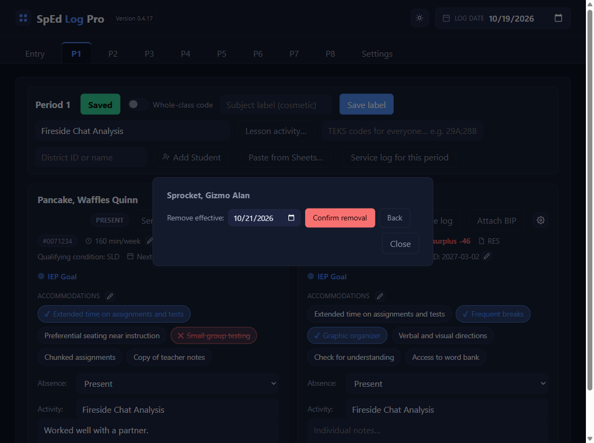
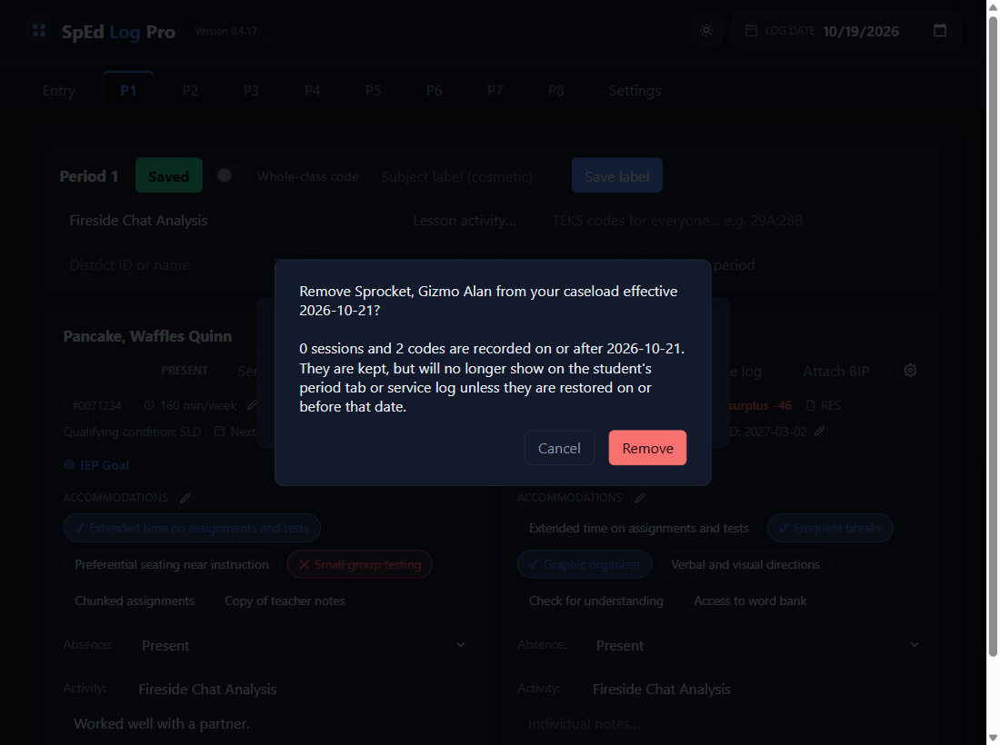
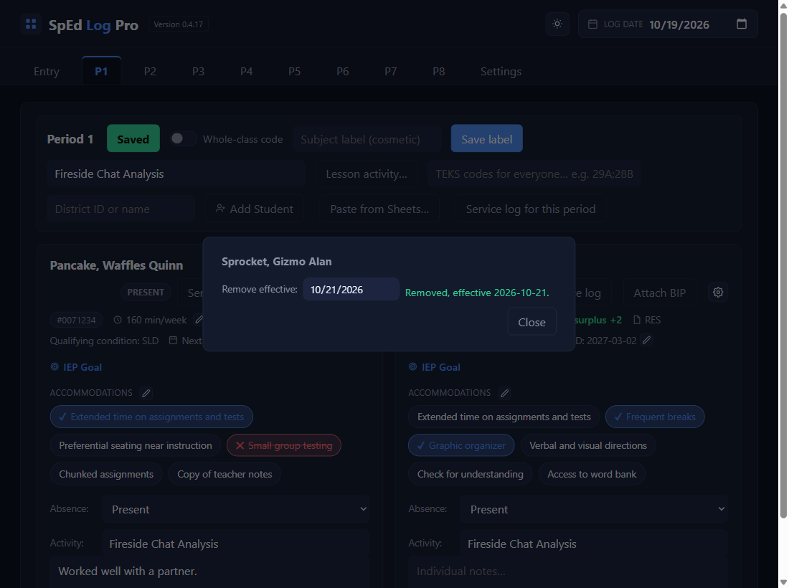
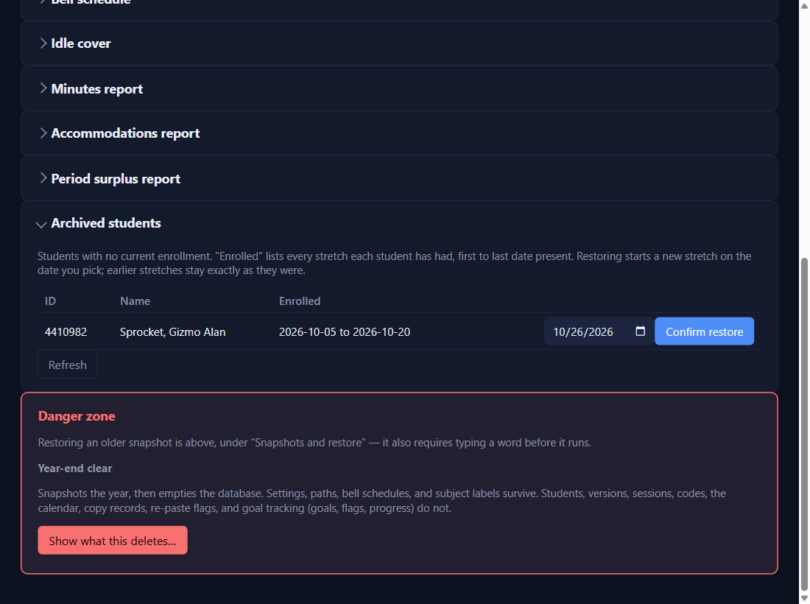

A student leaves, moves, or comes back
Open the card’s gear
A pop-up with the student's name lists what you can do. Each choice shows its step in the same pop-up, with Back.

Changing periods: Move to another period
Pick the new period and the date the move starts, then Move. Days before it stay in the old period. A grey line says the earliest date you can use.

Leaving your caseload: Remove from my caseload
Set Remove effective to the first day they're gone (removing effective 10/21 means 10/21 is already gone), then Confirm removal.

Read what it says, then Remove
It tells you how many saved days fall on or after that date. They're kept, just no longer shown for those dates.

Done
If the date is after the Log date, the card stays until then. Close leaves the pop-up.

Coming back: Settings → Archived students → Restore…
Each student who left is listed with every stretch they were enrolled. Click Restore…, pick the date they're back, and Confirm restore. They return to the period they were in; to change it, restore first, then move them.

✓ You'll know it worked
- A move: the card shows on the new period's tab from the move date.
- A removal: the line
Removed, effective …. - A restore: the student leaves the Archived list and is back on their tab from that date.
✕ Avoid these
- The last day present as the removal date. It's the first day gone.
- Delete permanently is only for a student added by mistake with nothing ever saved. Use Remove for everyone else.
- A student in two classes is two records: move or remove each one.
⚠ If you see this
Exit date … is on or before …, when the student's current enrollment began.Pick a date after their start date.
Restore date … is before the exit date ….They can't come back before they left: pick a later date.